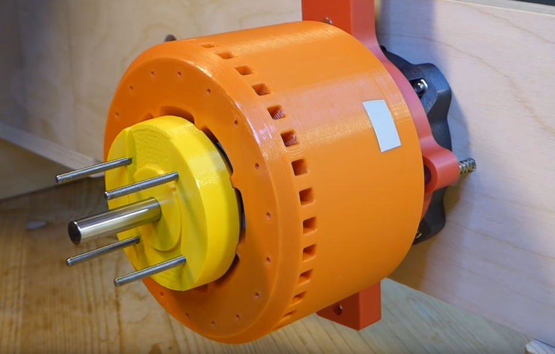
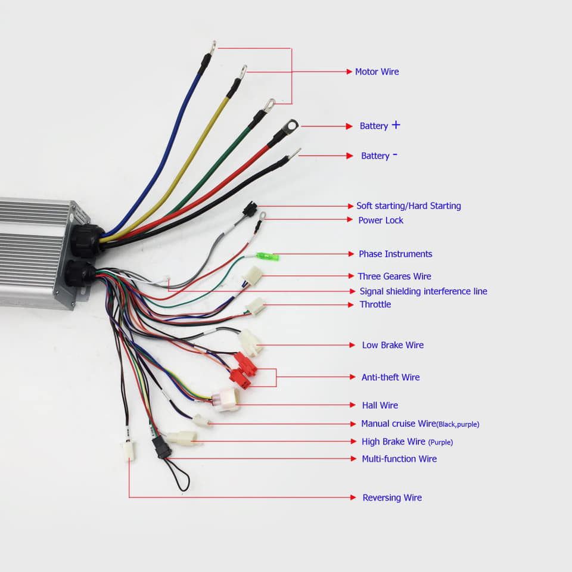
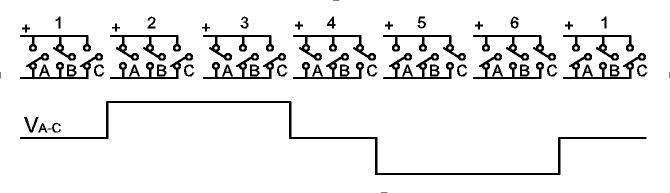

motors revision 2272



Challenges
Electric motors are expensive and difficult to manufacture, and not universally available. Most thermoplastics operate at low melting points not suitable for intense or prolonged motor operation.
Approaches
3D print an electric motor using recycled plastics selected specially for high durability and heat resistance, 3D printers, and vitamins. Design with investment casting, and direct metal printing in mind.
Stepper Motors
Dual-shaft NEMA-17 Stepper motor

References
Servo Motors
- AMT102-V inexpensive shaft mounted rotary encoder with adapters for various motor and shaft types
- Mechaduino servo controller
Utility Motors
- Christoph Laimer's Youtube channel
- Step by step instructions for making the 600W, 3d-printed Halbach array brushless motor.
- 3d-printed Halbach Motor - Update, Tuning, Testing (and sending it to FliteTest)
- 3d-printed brushless Motor - Explore max. RPM (make it explode)
- 3D Printed Motor on an Ultralight!
Alternatives
- 1/2 Horsepower 115 Volt AC 1725 RPM Magnetek Motor
- Salvaged AC, DC, or universal motor - permanent magnet or inductive
Sterling motor
Tools
Development targets
- https://www.thingiverse.com/thing:20177
- https://www.thingiverse.com/thing:11164
- https://www.thingiverse.com/thing:251004
- IRFP260N mosfets - 50A 200V - $3 ea Ebay - same as Controller